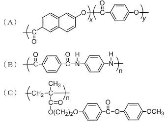

令和2年度 問20 高分子化学
次の（A）～（C）の液晶性高分子に関する1～5の記述のうち、誤っているものはどれか。

①
（A）は主鎖型液晶ポリマーに分類される。
②
（B）はサーモトロピック液晶ポリマーに分類される。
③
（B）は溶液中で液晶性を発現し、高強度・高弾性率の繊維として用いられる。
④
（C）は側鎖型液晶ポリマーに分類される。
⑤
（A）は非直線性分子を結合することで融点が下がるように工夫されている。
正答
② （B）はサーモトロピック液晶ポリマーに分類される。
（B）は芳香族ポリアミド（アラミド）です。耐熱性が高く、サーモトロピック液晶ポリマーではなくリオトロピック液晶ポリマーです。サーモトロピック液晶ポリマーには例えばポリエステル系があります。
液晶高分子の分類方法にはいくつか種類があります。
- メソゲンのつながり方による分類
- 主鎖型：液晶性を発現する剛直な部位（メソゲン）を主鎖に導入したもの。
- 側鎖型：側鎖に液晶性を発現する剛直な部位を導入したもの。
- 複合型：主鎖と側鎖の両方に液晶性を発現する剛直な部位を導入したもの。
- 液晶性の発現方法による分類
- サーモトロピック液晶：1成分からなり、温度変化によって液晶特性を示すもの。
- リオトロピック液晶：溶媒中で濃度変化によって液晶特性を示すもの。
- 分子の形状による分類
- 棒状分子型：最も一般的な液晶高分子の形状。
- 円盤状分子型：ディスコティック相を形成する。
- 液晶相の構造による分類
- ネマティック相：分子が一方向に配向した状態。
- スメクティック相：層状構造を持つ状態。
- コレステリック相（キラルネマティック相）：螺旋構造を持つ状態。
- ディスコティック相：円盤状分子が積層したカラム構造を形成する状態。